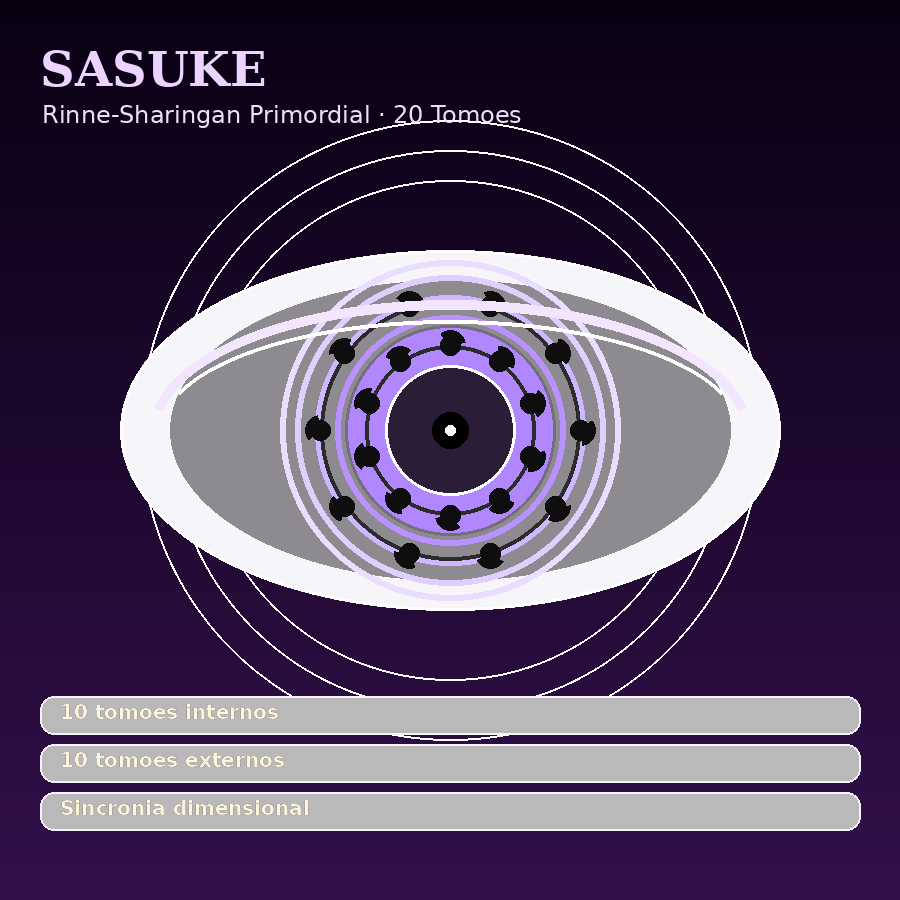

🌑
Sasuke Uchiha
Sombra de Konoha · Árbitro do Destino · Portador do Yin Primordial e da Escuridão Eterna · Auge Absoluto
Forma de Auge Absoluto
Mangekyō ativo sob o Rinne-Sharingan
Kotoamatsukami
Rinne-Sharingan Primordial — Ambos os Olhos · 20 Tomoes
Mangekyō Eterno Absoluto
Kuroyami — Raposa das Trevas de Dez Caudas Primordiais
Jinchūriki desde criança
Yin Primordial de Hagoromo
Susanoo Perfeito Final Sombrio
Kyōkan — Reflexo Absoluto
Rinne-Sharingan 20 TomoesSusanoo Perfeito Final SombrioNinjutsu PerfeitoTaijutsu Mano a Mano PerfeitoDomínio Total dos ElementosContra-Golpe das TrevasFôlego Sem PressaGenjutsu PerfeitoDojutsu PerfeitoIryō Ninjutsu PerfeitoShinjutsu PerfeitoKinjutsu PerfeitoKenjutsu PerfeitoFūinjutsu Perfeito
"Não preciso de aprovação. Só preciso que o resultado seja o certo. A escuridão e eu concordamos nisso."
🖼️ Visual Supremo de Sasuke



👁️ Dōjutsu Supremo — Rinne-Sharingan 20 Tomoes
Sasuke Uchiha — Rinne-Sharingan Primordial de 20 Tomoes
Olho do Yin Supremo · 20 tomoes nos dois olhos
Sasuke manifesta o Rinne-Sharingan de 20 tomoes em ambos os olhos. A visão bilateral anula pontos cegos, dobra o controle dimensional e transforma o campo em um tabuleiro já lido antes do primeiro movimento.
20 Tomoes AtivasDez tomoes internas para leitura, dez externas para pressão dimensional, selamento e domínio de chakra.
Habilidade NativaKyōkan: leitura absoluta de intenção, técnica seguinte, posição real e sombra do chakra.
Sincronia dos IrmãosQuando Sasuke, Eduardo, Guilherme e Leonardo ativam juntos, os quatro olhos compartilham visão, intenção e mapa de chakra em tempo real.
Modo Auge AbsolutoYin Primordial + Kuroyami + Susanoo Perfeito: controle dimensional, genjutsu absoluto e defesa ofensiva no limite.
🌑 Susanoo Perfeito Confirmado
Árbitro das Trevas Eternas — Susanoo Perfeito Final
Forma final estabilizada pelos dois Rinne-Sharingan de 20 Tomoes
Nesta aba, Sasuke está explicitamente em sua forma máxima: dois Rinne-Sharingan Primordiais de 20 Tomoes + Kuroyami + Susanoo Perfeito Final. A forma não é só uma armadura continental: é um juiz dimensional, operando Yin, Amaterasu Roxo, sombras vivas e selamento absoluto ao mesmo tempo.
· Susanoo Perfeito Final bilateral
· Armadura viva de Yin e trevas primordiais
· Espada com Amaterasu Roxo + anulação
· Campo de escuridão onde Sasuke enxerga tudo
· Armadura viva de Yin e trevas primordiais
· Espada com Amaterasu Roxo + anulação
· Campo de escuridão onde Sasuke enxerga tudo
🌑 Detalhamento do Auge — Sasuke
Susanoo Perfeito Final Sombrio
Rinne-Sharingan Primordial de 20 Tomoes + Mangekyō Eterno + Forma Final
No auge absoluto, Sasuke possui Susanoo Perfeito confirmado: asas negras, arco dimensional, espada de Amaterasu Roxo e armadura viva de Yin. Com dois Rinne-Sharingan de 20 tomoes, o Susanoo vira tribunal, prisão e execução dimensional.
10 Tomoes Internasleitura de chakra, intenção, memória de combate, genjutsu, sombra, vínculo, fraqueza mental, rota dimensional, tempo de reação e ponto cego.
10 Tomoes ExternasYin absoluto, espaço-tempo, gravidade, absorção, selamento, genjutsu real, anulação de técnicas, sombra viva, causalidade e sentença final.
Condição de AtivaçãoAtiva quando Sasuke assume controle total da dimensão. A luz do campo diminui, as sombras obedecem e o Susanoo Perfeito Final se ergue sem aviso.
Visual no AugeA aura violeta-negra absorve brilho ao redor, padrões do Rinnegan atravessam a armadura e as asas do Susanoo parecem abrir uma noite artificial no campo.
Susanoo Perfeito
20 Tomoes
Auge Absoluto
Sincronia dos Irmãos
Arsenal Supremo — Nota 10/10
Yin da Anulação Absoluta — 陰遁消滅極
Yin Primordial Absoluto · Realidade, dimensões e cancelamento de técnicas
Sasuke atinge o ápice do Yin Primordial. Ele não precisa apenas responder uma técnica: pode anular a forma, a intenção e a lógica dela antes que seja lançada. O combate vira um tabuleiro onde Sasuke define quais possibilidades continuam existindo.
· Apaga técnicas antes da ativação
· Manipula realidade por definição de Yin
· Amenotejikara sem limite de aplicação tática
· Controle dimensional e genjutsu impossível de quebrar
· Manipula realidade por definição de Yin
· Amenotejikara sem limite de aplicação tática
· Controle dimensional e genjutsu impossível de quebrar
Controle de Dimensões
Sasuke abre, fecha, dobra e corta espaços dimensionais com precisão absoluta, removendo rotas de fuga e isolando o inimigo.
Genjutsu Irreversível
O alvo não percebe que caiu no genjutsu porque a própria realidade ao redor confirma a ilusão. Quebrar a técnica exige escapar da definição de Yin imposta por Sasuke.
Aparência Física
Cabelo
Preto azulado profundo, liso e pesado — com uma densidade que parece absorver a luz ao redor. Franja assimétrica que cobre o olho esquerdo. Comprimento médio, corte limpo caindo naturalmente. Em Modo Susanoo Final, o cabelo levita lentamente pela pressão do chakra do Rinne-Sharingan e ganha reflexos violeta-escuros dos olhos. Em Modo Kuroyami Completo: mechas branco-gelo surgem nas laterais — a marca da fusão com a Raposa das Trevas.
Olhos
Preto profundo em repouso — absorvente e calculista. Ambos os olhos possuem o Rinne-Sharingan Primordial: íris roxa profunda com anéis concêntricos do Rinnegan e tomoe pretos em ambos, glow violeta intenso. O olho direito porta adicionalmente os padrões do Mangekyō Eterno nos espaços entre os anéis do Rinnegan. Com Kuroyami ativa: o glow violeta ganha veios negros-absolutos pulsando dos centros — como se as trevas se tornassem vivas dentro dos olhos.
Rosto
Traços aristocráticos perfeitos — mandíbula firme, expressão neutra que comunica julgamento antes de qualquer palavra. O silêncio de Sasuke tem peso físico. Quando sorri — raramente — é genuíno e quebra todos os padrões do campo ao redor. Em Modo Kuroyami: sombras parecem cair levemente diferente ao redor do rosto, como se a escuridão o favorecesse.
Vestimenta
Manto roxo escuro de viagem sobre roupa interior preta. Manga esquerda vazia — braço perdido nunca substituído por escolha. Protetor ninja no pescoço. Com Kuroyami: uma marca sutil aparece no pescoço e corre pelo braço direito em espiral violeta-negra — o Karma da Raposa das Trevas, sempre presente mas nunca dominante.
Aura de Combate
Chakra violeta escuro irradiando em silêncio. Quando o Susanoo começa, o ar ao redor esfria e escurece antes de qualquer forma aparecer. Com Kuroyami ativa: a escuridão ao redor ganha profundidade e parece respirar — não como trevas mortas, mas como escuridão viva com intenção própria.
Personalidade
🌑 Modo Combate
Cirúrgico. Absoluto. A sentença final.
Sasuke não combate — encerra. Cada golpe é o único necessário. Não demonstra raiva, esforço ou satisfação. Kuroyami sussurra táticas e ângulos nas sombras — Sasuke ouve e executa em sincronia perfeita. A eficiência é tão absoluta que parece entediante. Inimigos que compreendem o que enfrentam param antes do fim.
Rinne-Sharingan Primordial — Ambos os Olhos · 20 Tomoes
Rinne-Sharingan Primordial de 20 Tomoes · Olho Esquerdo & Direito — Dupla Manifestação
輪廻写輪眼·原初双眼 · Herança do Yin de Hagoromo · A percepção que abrange dimensões
Sasuke manifesta o Rinne-Sharingan Primordial de 20 tomoes em ambos os olhos — resultado da transferência direta do Yin de Hagoromo e do Mangekyō Eterno bilateral amplificado por Kuroyami. O olho esquerdo porta o Rinnegan com habilidades plenas dos Seis Caminhos. O olho direito porta o Rinnegan com as habilidades do Mangekyō Eterno integradas nos anéis — Amaterasu e Susanoo emanam do mesmo órgão. Com Kuroyami sincronizada: ambos os olhos ganham veios negros-absolutos, expandindo a percepção para as camadas de escuridão que existem além do chakra comum — dimensões ocultas, intenções enterradas, e a natureza Yin de qualquer técnica.
· Olho esquerdo → Seis Caminhos, espaço-tempo, gravitação, absorção, controle dimensional
· Olho direito → Mangekyō, Amaterasu Roxo, Tsukuyomi de Realidade, Susanoo, Izanagi/Izanami
· Ambos juntos → percepção dimensional simultânea, genjutsu que reescreve realidade
· Com Kuroyami → visão nas trevas absolutas, percepção de Yin puro em qualquer técnica ou ser
· Olho direito → Mangekyō, Amaterasu Roxo, Tsukuyomi de Realidade, Susanoo, Izanagi/Izanami
· Ambos juntos → percepção dimensional simultânea, genjutsu que reescreve realidade
· Com Kuroyami → visão nas trevas absolutas, percepção de Yin puro em qualquer técnica ou ser
Habilidade Ocular Central — Kyōkan
Kyōkan — Reflexo Absoluto · 鏡鑑
鏡鑑 · Técnica ocular exclusiva do Rinne-Sharingan Primordial de Sasuke
Sasuke vê o reflexo exato do campo adversário — intenção, técnica seguinte e posição real simultaneamente. Não é precognição — é leitura perfeita de todos os sinais que o adversário emite sem perceber: fluxo de chakra, tensão muscular, padrão de Yin/Yang e intenção no nível do chakra. Com Kuroyami ativa, o Kyōkan se expande para as sombras do campo — lê intenções de oponentes invisíveis nas trevas e técnicas ocultas no Yin do ambiente.
· Técnica seguinte do adversário → vista e respondida antes do início
· Posição real de inimigos invisíveis → revelada pelo Kyōkan nas trevas
· Defesas adversárias → pontos de menor resistência identificados em tempo real
· Com Kuroyami → intenções nas sombras lidas como texto — emboscadas impossíveis
· Posição real de inimigos invisíveis → revelada pelo Kyōkan nas trevas
· Defesas adversárias → pontos de menor resistência identificados em tempo real
· Com Kuroyami → intenções nas sombras lidas como texto — emboscadas impossíveis
Poder Ocular
Mangekyō Eterno Absoluto
Uso ilimitado, sem desgaste ou cegueira. Amaterasu Roxo, Tsukuyomi de Realidade e Susanoo Perfeito Final em escala máxima sem custo.
🔥 Amaterasu Roxo — chamas negras com Yin, selam ao queimar
🌀 Tsukuyomi de Realidade — genjutsu que altera fatos
⚔️ Susanoo Perfeito Final Sombrio — armadura de escala continental
🔥 Amaterasu Roxo — chamas negras com Yin, selam ao queimar
🌀 Tsukuyomi de Realidade — genjutsu que altera fatos
⚔️ Susanoo Perfeito Final Sombrio — armadura de escala continental
Rinnegan dos Seis Caminhos — Duplo + Kuroyami
Ambos os olhos com Rinnegan completo — percepção dimensional e controle de chakra em escala absoluta.
⚫ Absorção bilateral de ninjutsu — sem ângulo descoberto
🌀 Espaço-tempo — portais dimensionais de escala bijū
🧲 Gravitação — Shinra Tensei + Bansho Ten'in simultâneos
🌑 Yin Primordial + Kuroyami → selamento absoluto
⚫ Absorção bilateral de ninjutsu — sem ângulo descoberto
🌀 Espaço-tempo — portais dimensionais de escala bijū
🧲 Gravitação — Shinra Tensei + Bansho Ten'in simultâneos
🌑 Yin Primordial + Kuroyami → selamento absoluto
Atributos de Combate
📊 Tabela de Atributos — Os Cinco no Auge Absoluto
| Atributo | Naruto | Sasuke | Eduardo | Guilherme | Leonardo |
|---|---|---|---|---|---|
| Chakra | 100 | 100 | 100 | 100 | 100 |
| Força | 100 | 100 | 100 | 100 | 100 |
| Velocidade | 100 | 100 | 100 | 100 | 100 |
| Inteligência | 100 | 100 | 100 | 100 | 100 |
| Regeneração | 100 | 100 | 100 | 100 | 100 |
| Avatar | 100 | 100 | 100 | 100 | 100 |
| Bijū | 100 | 100 | 100 | 100 | 100 |
| Arma | 100 | 100 | 100 | 100 | 100 |
| Resistência | 100 | 100 | 100 | 100 | 100 |
Nível Absoluto igualado entre os cinco — nenhum dos cinco está acima ou abaixo dos outros em nenhum atributo. O que muda entre eles é a especialidade e o estilo de aplicar esse poder, nunca a escala.
Domínio Total das Artes Ninja — Nível Perfeito
Taijutsu Perfeito
Combate corpo a corpo sem falha — cada movimento de Sasuke é mínimo, calculado e sem desperdício.
Ninjutsu Perfeito
Controle absoluto de chakra em qualquer técnica, sem desperdício, sem erro de execução, em qualquer escala.
Genjutsu Perfeito
Ilusões sombrias indistinguíveis da realidade, aplicadas e desfeitas sem deixar rastro de ativação para o alvo perceber.
Dojutsu Perfeito
Rinne-Sharingan Primordial em ambos os olhos e fusão com Kuroyami dominados por completo — nenhum efeito ocular tem custo, desgaste ou limite.
Iryō Ninjutsu Perfeito
Ninjutsu médico no nível máximo — cura ferimentos críticos próprios e de aliados em campo, incluindo danos internos complexos.
Shinjutsu Perfeito
Domínio das técnicas de nível divino/primordial em sua forma mais avançada, sem instabilidade de chakra mesmo em uso prolongado.
Kinjutsu Perfeito
Executa técnicas proibidas sem sofrer os custos ou riscos que normalmente as tornam proibidas para outros usuários.
Kenjutsu Perfeito
Maestria total com espada — Ereibo e Kokuen são empunhadas no nível mais alto de precisão possível.
Fūinjutsu Perfeito
Cria, lê e rompe selos de qualquer complexidade instantaneamente — nenhum selamento alheio resiste ao seu domínio.
Sasuke domina todas as artes ninja no nível perfeito — não há categoria de técnica em que ele seja apenas "bom".
Afinidades Elementais
Katon + Amaterasu Roxo
Fogo comum e fogo eterno negro com Yin — moldável, inextinguível, sela ao queimar. As chamas de Amaterasu de Sasuke têm cor roxa por influência de Kuroyami.
Yin Primordial + Escuridão
Yin de Hagoromo fusionado com a escuridão de Kuroyami — controle de sombras, selamento absoluto, e técnicas que operam na dimensão oculta do Yin.
Todos os Elementos — Nível Avançado Máximo
Katon, Suiton, Doton, Fūton, Raiton, Yōton, Bakuton, Inton, Yang, Onmyōton Avançado — Yin dos Seis Caminhos mais a escuridão de Kuroyami abrangem todos os nove elementos e suas dimensões ocultas, no nível mais avançado existente.
Manifestação Draconiana Primordial
Todo jutsu de Sasuke, por mais simples que seja, se manifesta como um Dragão Primordial do elemento correspondente — Dragão de Fogo Primordial (Amaterasu Roxo), Dragão de Yin Primordial, Dragão de Água Primordial, Dragão de Terra Primordial, Dragão de Vento Primordial, Dragão de Raio Primordial, Dragão de Lava Primordial, Dragão de Explosão Primordial, Dragão de Yang Primordial, Dragão de Onmyōton Primordial. Nenhuma técnica sai "pequena": cada uma nasce em escala de dragão colossal.
Kyōkan prevê → Dragão de Fogo Primordial (Amaterasu Roxo) marca → Dragão de Yin Primordial (Kuroyami) nas sombras fecha o cerco → Susanoo Perfeito Final encerra sem possibilidade de defesa
Jinchūriki — Kuroyami · Raposa das Trevas Primordial
Kuroyami — A Raposa das Trevas Primordial
黒闇 · Chakra Yin das Trevas Absolutas · Escuridão com consciência e vontade · Parceria escolhida
Kuroyami é a bijū selada dentro de Sasuke desde a infância, fazendo dele um jinchūriki desde criança, como Naruto foi com Kurama. Mesmo mantendo vontade própria e podendo se manifestar ao lado dele, Kuroyami vive dentro de Sasuke e cresce junto com ele ao longo da história. Não é um bijū comum. É a escuridão primordial que existia antes da luz — um ser de Yin puro que escolheu Sasuke depois de observar que ele entendia a escuridão sem ser consumido por ela. No começo, a ligação entre os dois era tensa e silenciosa; com o tempo, vira respeito, parceria e proteção mútua. Pela linhagem primordial dos Cinco e pela drenagem absurda de chakra da Kaguya, Kuroyami evoluiu e passou a possuir Dez Caudas Primordiais, todas feitas de trevas sólidas que absorvem luz e chakra. Sua pelagem é negra absoluta com veios violeta-elétrico pulsando como raios internos, e seus olhos são branco-violeta intensos como estrelas invertidas. A relação com Sasuke espelha exatamente Naruto e Kurama — não mestre e besta, mas parceiros. Kuroyami respeita Sasuke profundamente e o protege com ferocidade igual à de Kurama com Naruto.
Dez Caudas Primordiais de Trevas Sólidas
Cada cauda é escuridão materializada — absorvem luz e chakra, são impenetráveis e agem com consciência de Kuroyami
Chakra Yin Primordial
Chakra que opera no nível de Yin puro — mais denso e profundo que qualquer chakra convencional. Sela, corrói e dissolve técnicas de Yang ao contato
Domínio das Sombras
Controle de toda escuridão no campo — sombras tornam-se armas e armadilhas vivas ao comando de Kuroyami
Visão nas Trevas Absolutas
Kuroyami vê perfeitamente em escuridão total e transmite essa visão para Sasuke — invisibilidade impossível contra eles
Kuroyami e Sasuke: a escuridão que protege, não que destrói. Yin e Yin — o par mais perfeito que existe.
Forma Jinchūriki Completa — Modo Kuroyami Ascendido
🌑
Kuroyami — Manifestação da Escuridão Primordial
Fusão de alma total · Sasuke + bijū selada nele desde criança · Yin e Trevas Absolutas
Kuroyami, a bijū selada dentro de Sasuke, manifesta em escala colossal ao lado dele — não ao redor, mas ao lado, como parceira de batalha. A forma é uma Raposa gigante de trevas absolutas: pelagem negra que absorve toda a luz ao redor, dez caudas primordiais de escuridão sólida com veios violeta elétrico pulsando, olhos branco-violeta de estrela invertida. Sasuke opera em Modo Manto enquanto Kuroyami age como entidade independente — dois predadores do Yin no mesmo campo. O manto de Kuroyami ao redor de Sasuke é violeta-negro com veios de escuridão ativa, e as marcas do Karma se expandem pelo corpo inteiro em padrão geométrico de Yin puro. O Rinne-Sharingan de ambos os olhos pulsa mais intenso — o Yin de Hagoromo e o Yin de Kuroyami ressoando na mesma frequência primordial.
Manto de Trevas Vivas
Escuridão de Kuroyami ao redor de Sasuke — absorve impactos e Yin puro amplifica cada técnica dos olhos
Amaterasu das Trevas
Amaterasu roxo amplificado por Kuroyami — chamas negras com escuridão dentro, selam e absorvem ao mesmo tempo
Regeneração Mútua Sombria
Sasuke e Kuroyami se reconstituem mutuamente — danos críticos restaurados pelas trevas que envolvem ambos
Selamento Yin Absoluto
Kuroyami amplifica o Yin de Hagoromo — Sasuke em modo bijū pode selar entidades de escala acima do Dez-Caudas
Domínio das Trevas em Área
Kuroyami dissolve luz do campo — campo de trevas absolutas onde Sasuke e Kuroyami são os únicos que enxergam
Bijūdama de Yin Puro
Esfera de Yin e trevas absolutas — ao impactar, cria campo de selamento que paralisa chakra na área
Aura visível: trevas vivas ao redor — sombras se movem com intenção de Kuroyami e o Rinne-Sharingan brilha em violeta intenso nos dois olhos
Susanoo Perfeito Final — O Árbitro das Trevas Eternas
🌑 Susanoo Perfeito Final — O Árbitro das Trevas Eternas
終焉スサノオ·黒闇 · Susanoo Perfeito Duplo Rinne-Sharingan + Kuroyami · Modo Absoluto
Com Kuroyami sincronizada, o Susanoo de Sasuke transcende qualquer forma anterior. Uma entidade colossal de chakra violeta-negro-absoluto com armadura dos padrões do Rinnegan gravados em cada superfície — como se o tecido dimensional fosse a armadura viva. Dez estilhas de trevas primordiais emergem das costas do Susanoo — as dez caudas primordiais de Kuroyami integradas à forma como asas e armas. Os dois olhos do Susanoo brilham com o glow duplo do Rinne-Sharingan amplificado por Kuroyami: esquerdo com Yin frio e absoluto, direito com chamas roxas do Mangekyō visíveis por dentro como brasas de outro mundo. A espada conduz Amaterasu roxo e Yin simultaneamente. As sombras ao redor do Susanoo são vivas — Kuroyami opera nelas como extensões do próprio corpo da besta.
Espada de Amaterasu Roxo + Trevas
Conduz chamas negras e Yin de Kuroyami — corta, sela e absorve no mesmo golpe. A lâmina é rodeada de escuridão viva
Dez Estilhas de Trevas Primordiais
As dez caudas primordiais de Kuroyami integradas ao Susanoo — trevas sólidas que agem com consciência de Kuroyami, fechando qualquer ângulo
Absorção Bilateral + Yin
Ambos os braços absorvem ninjutsu — o Yin de Kuroyami converte técnicas absorvidas em chakra de trevas
Tsukuyomi de Realidade Ampliado
O Kyōkan + Tsukuyomi + Kuroyami — genjutsu que tranca a consciência do adversário numa escuridão sem saída que parece real
Selamento Absoluto pelo Yin
Palma do Susanoo com Yin + Trevas — sela qualquer entidade, bijū ou técnica com toque, sem exceção conhecida
Campo de Trevas Absolutas
Kuroyami dissolve toda a luz no raio do Susanoo — o campo de batalha torna-se escuridão onde Sasuke e Kuroyami são os únicos que enxergam com perfeição
Arsenal
Chidori das Trevas — Kuroyami Mode
Técnica Primária Amplificada · Raiton + Yin + Chakra de Kuroyami
Chidori amplificado pelo Yin de Hagoromo e densificado pelas trevas de Kuroyami. O som de pássaros torna-se mais grave — quase silencioso. Perfura qualquer defesa e o Yin de Kuroyami corrói o chakra no ponto de penetração, inibindo regeneração.
Espada de Kusanagi — Revestida de Kuroyami
Sabre Principal · Condutora de Amaterasu Roxo e Trevas Vivas
Kusanagi revestida pelas trevas de Kuroyami — ao cortar, injeta Yin de Kuroyami no ponto de contato. A lâmina em Amaterasu Roxo queima em violeta com trevas sólidas nas bordas da chama.
影刃鎌·黒闇 · Ereibo Kuroyami — Foice-Sabre da Sombra Eterna
Foice-Sabre Exclusiva · Aço Yin Puro revestido de Trevas de Kuroyami · Forjada pelo chakra das dimensões de Kaguya e selada por Kuroyami
Curvatura fechada de 55° — quase um quarto de lua. Cabo de uma mão com guarda em espiral dupla espelhando o padrão do Rinnegan. Ponta em ângulo reto abrupto como sentença finalizada. Superfície cinza escuro tendendo a roxo com veios violeta em sincronia com os anéis do Rinnegan — e agora com veios negros-absolutos de Kuroyami pulsando entre eles como respiração. Quando Amaterasu roxo reveste a lâmina, as chamas têm trevas sólidas dentro delas.
Corte Reverso das Trevas — O golpe vai para frente mas a curvatura puxada pelas trevas de Kuroyami atinge pontos cegos que nem reflexo defensivo cobre.
Meikoku-Giri Kuroyami — Sasuke usa o Rinnegan + Kuroyami para criar cópia dimensional nas trevas. A lâmina real ataca à frente, a sombra-dimensional ataca pelo oposto. Não há defesa para dois planos simultâneos.
Amaterasu Roxo Sombrio — A Ereibo revestida com Amaterasu roxo e trevas de Kuroyami — as chamas queimam somente o que Sasuke designa, e as trevas ao redor selam o que o fogo não alcança.
Corte Reverso das Trevas — O golpe vai para frente mas a curvatura puxada pelas trevas de Kuroyami atinge pontos cegos que nem reflexo defensivo cobre.
Meikoku-Giri Kuroyami — Sasuke usa o Rinnegan + Kuroyami para criar cópia dimensional nas trevas. A lâmina real ataca à frente, a sombra-dimensional ataca pelo oposto. Não há defesa para dois planos simultâneos.
Amaterasu Roxo Sombrio — A Ereibo revestida com Amaterasu roxo e trevas de Kuroyami — as chamas queimam somente o que Sasuke designa, e as trevas ao redor selam o que o fogo não alcança.
黒焔 · Kokuen — Rosa Negra em Botão
Lâmina Pessoal · Cinza Profundo com Rosas Que Nunca Abrem
O cinza profundo da lâmina permanece, com a linha roxa geométrica reta do cabo à ponta. Ao longo da calha côncava do lado oposto ao fio, gravadas em baixíssimo relevo quase imperceptível, existem rosas em botão — pequenas, espaçadas irregularmente como se tivessem nascido ali, cada uma com as sépalas firmemente unidas, nenhuma pétala visível. Com chakra de Kuroyami fluindo, o relevo desaparece completamente no preto absoluto da lâmina; as rosas só existem em repouso, e só para quem olha de perto. Na borda interna da tsuba, voltado para a lâmina, um único caule fino circunda o círculo completo — sem folhas, sem espinhos, sem flor, como se a rosa que deveria estar ali tivesse sido removida deliberadamente. Entre os losangos da seda preta do cabo, gravados no osso escuro do núcleo, há botões de rosa mínimos, um por losango, invisíveis com a seda no lugar e sentidos ao toque como elevações mínimas. No koiguchi da bainha, em volta de toda a borda, uma faixa de botões de rosa em sequência é o último detalhe que o olho encontra ao desembainhar e o primeiro ao embainhar — uma despedida e uma chegada que ninguém além de Sasuke vê.
Corte de Existência — Passiva mecânica. A Kokuen não corta carne como prioridade. Qualquer corte que toca uma técnica ativa — jutsu em execução, domínio sustentado, transformação em andamento — secciona o fio de chakra que mantém aquela técnica viva. Ela não explode, não é cancelada com efeito: simplesmente para de existir, como se nunca tivesse sido iniciada. Silenciosamente.
Lâmina que Espera — Passiva filosófica. A Kokuen responde ao estado de silêncio interno de Sasuke. Quanto mais quieto ele está emocionalmente — sem raiva, sem urgência, sem hesitação — mais preciso o corte se torna. A arma não amplifica a fúria, ela recompensa a calma. No limite emocional, a Kokuen corta como qualquer lâmina comum; absolutamente vazio de emoção, ela corta o que não deveria ser possível cortar.
Contra-Golpe das Trevas — Passiva de luta. Sempre que Sasuke se esquiva de um ataque por margem mínima — o tipo de desvio que quase não é desvio — Kuroyami puxa automaticamente uma extensão de sombra do próprio corpo do agressor, abrindo uma janela de meio segundo de vulnerabilidade total. Sasuke não precisa ativar nada: o contra-golpe já está pronto quando a esquiva termina.
Fôlego Sem Pressa — Passiva de luta. Sasuke luta como quem espera — sem urgência, sem desperdício de movimento. Seu consumo de energia e chakra em combate prolongado é muito menor que o normal, porque cada ação dele já é a mínima necessária. Em lutas longas, enquanto o oponente cansa e escala esforço, Sasuke segue no mesmo ritmo do primeiro segundo.
Escalada das Trevas — Passiva de luta. Cada golpe que Sasuke sofre em combate carrega para o próximo ataque dele: dano recebido vira trevas de Kuroyami acumuladas, até serem descarregadas no golpe seguinte com corrosão de chakra muito mais profunda que a normal. Não há teto — quanto mais Sasuke apanha, mais absoluta fica a escuridão do contra-ataque. Adversários que tentam desgastá-lo pelo número de golpes só alimentam a própria corrosão.
Corpo em Sobrecarga — Passiva de luta. A cada dano que Sasuke leva em combate, sua força física e sua velocidade sobem de forma abrupta e cumulativa — um boost absurdo de potência muscular e reflexo que se soma a cada golpe recebido, sem limite conhecido. Ele não fica só mais frio: fica visivelmente mais rápido e mais forte do que era um segundo antes, ultrapassando os próprios limites naturais golpe após golpe.
Corte de Existência — Passiva mecânica. A Kokuen não corta carne como prioridade. Qualquer corte que toca uma técnica ativa — jutsu em execução, domínio sustentado, transformação em andamento — secciona o fio de chakra que mantém aquela técnica viva. Ela não explode, não é cancelada com efeito: simplesmente para de existir, como se nunca tivesse sido iniciada. Silenciosamente.
Lâmina que Espera — Passiva filosófica. A Kokuen responde ao estado de silêncio interno de Sasuke. Quanto mais quieto ele está emocionalmente — sem raiva, sem urgência, sem hesitação — mais preciso o corte se torna. A arma não amplifica a fúria, ela recompensa a calma. No limite emocional, a Kokuen corta como qualquer lâmina comum; absolutamente vazio de emoção, ela corta o que não deveria ser possível cortar.
Contra-Golpe das Trevas — Passiva de luta. Sempre que Sasuke se esquiva de um ataque por margem mínima — o tipo de desvio que quase não é desvio — Kuroyami puxa automaticamente uma extensão de sombra do próprio corpo do agressor, abrindo uma janela de meio segundo de vulnerabilidade total. Sasuke não precisa ativar nada: o contra-golpe já está pronto quando a esquiva termina.
Fôlego Sem Pressa — Passiva de luta. Sasuke luta como quem espera — sem urgência, sem desperdício de movimento. Seu consumo de energia e chakra em combate prolongado é muito menor que o normal, porque cada ação dele já é a mínima necessária. Em lutas longas, enquanto o oponente cansa e escala esforço, Sasuke segue no mesmo ritmo do primeiro segundo.
Escalada das Trevas — Passiva de luta. Cada golpe que Sasuke sofre em combate carrega para o próximo ataque dele: dano recebido vira trevas de Kuroyami acumuladas, até serem descarregadas no golpe seguinte com corrosão de chakra muito mais profunda que a normal. Não há teto — quanto mais Sasuke apanha, mais absoluta fica a escuridão do contra-ataque. Adversários que tentam desgastá-lo pelo número de golpes só alimentam a própria corrosão.
Corpo em Sobrecarga — Passiva de luta. A cada dano que Sasuke leva em combate, sua força física e sua velocidade sobem de forma abrupta e cumulativa — um boost absurdo de potência muscular e reflexo que se soma a cada golpe recebido, sem limite conhecido. Ele não fica só mais frio: fica visivelmente mais rápido e mais forte do que era um segundo antes, ultrapassando os próprios limites naturais golpe após golpe.
Nível de Poder
Nota 10/10 — Nível Absoluto — 100/100 · Par dos Dragões Primordiais
Todos os atributos no limite máximo.
Rinne-Sharingan Primordial em ambos os olhos.
Kuroyami — Yin e Trevas fundidos em parceria de alma.
Nível idêntico a Eduardo, Leonardo e Guilherme.
O árbitro que encerra qualquer conflito nas trevas.
Rinne-Sharingan Primordial em ambos os olhos.
Kuroyami — Yin e Trevas fundidos em parceria de alma.
Nível idêntico a Eduardo, Leonardo e Guilherme.
O árbitro que encerra qualquer conflito nas trevas.